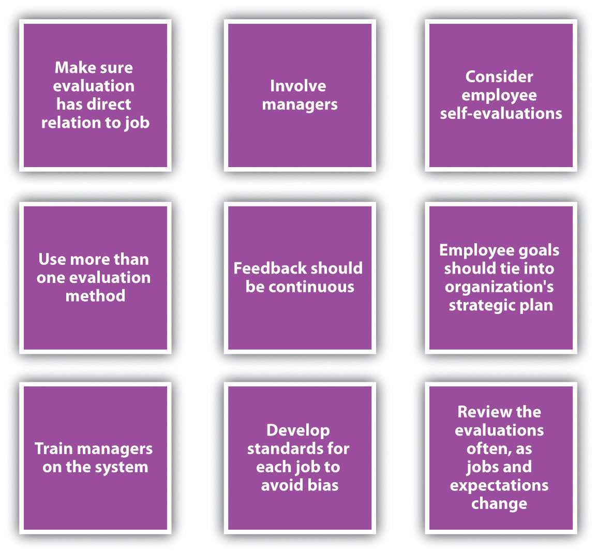
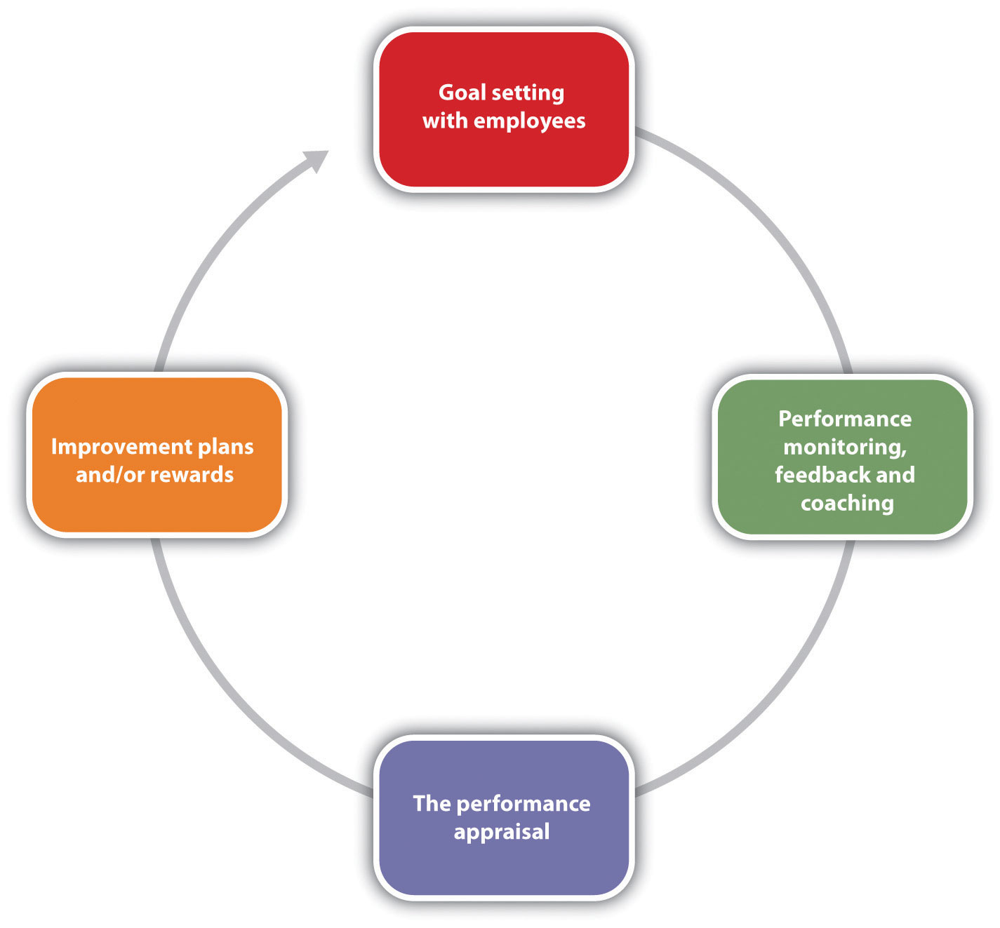

So far, we have discussed the necessity of providing formal feedback to employees through a systematic performance evaluation system. We have stressed the importance of making sure the HR professional knows how often performance evaluations should be given and if they are tied to pay increases.
The next step is to make sure you know the goals of the performance evaluation; for example, is the goal to improve performance and also identify people for succession planning? You will then determine the source for the performance evaluation data, and then create criteria and rating scales that relate directly to the employee’s job description. Once this is done, the successful functioning of the performance evaluation system largely depends on the HR professional to implement and communicate the system to managers and employees. This will be the primary focus of our next section.
The most important things to remember when developing a performance evaluation system include the following:
Figure 11.6 Best Practices in Performance Appraisal Systems
As you can see from Figure 11.7 "Performance Review System", the performance appraisal aspect is just one part of the total process. We can call this a performance review system. The first step of the process is goal setting with the employee. This could mean showing the employee his or her performance appraisal criteria or sitting down with the employee to develop MBOs. The basic idea here is that the employee should know the expectations and how his or her job performance will be rated.
Constant monitoring, feedback, and coaching are the next step. Ensuring the employee knows what he or she is doing well and is not doing well in a more informal manner will allow for a more productive employee.
Next, of course, is the formal performance evaluation process. Choosing the criteria, rating scale, and source of the evaluation are steps we have already discussed. The next step is to work with the employee to develop improvement plans (if necessary) and offer any rewards as a result of excellent performance. The process then begins again, setting new goals with the employee.
Figure 11.7 Performance Review System
As HR professionals, we know the importance of performance evaluation systems in developing employees, but this may not always be apparent to the managers we work with on a daily basis. It is our job to educate managers and employees on the standards for completing performance evaluation forms as well as train them on how to complete the necessary documents (criteria and ratings), how to develop improvement plans when necessary, and how to deliver the performance appraisal interview.
This video gives excellent tips on providing feedback to employees during the performance appraisal process.
First, after you have developed the new performance appraisal system (or adjusted an old one), consider offering training on how to effectively use it. The training, if required, can save time later and make the process more valuable. What we want to avoid is making it seem as if the performance appraisal process is “just one more thing” for managers to do. Show the value of the system in your training or, better yet, involve managers in developing the process to begin with.
Set standards should be developed for managers filling out the performance ratings and criteria. The advantage of this is accuracy of data and limiting possible bias. Consider these “ground rules” to ensure that information is similar no matter which manager is writing the evaluation:
Once your managers are trained, understand how to fill out the forms, and are comfortable with the ground rules associated with the process, we can coach them on how to prepare for performance evaluations. For example, here are the steps you may want to discuss with your managers who provide performance evaluations:
Most people feel nervous about giving and receiving performance evaluations. One way to limit this is to show the employee the written evaluation before the interview, so the employee knows what to expect. To keep it a two-way conversation, many organizations have the employee fill out the same evaluation, and answers from the employee and manager are compared and discussed in the interview. When the manager meets with the employee to discuss the performance evaluation, the manager should be clear, direct, and to the point about positives and weaknesses. The manager should also discuss goals for the upcoming period, as well as any pay increases or improvement plans as a result of the evaluation. The manager should also be prepared for questions, concerns, and reasons for an employee’s not being able to meet performance standards.
Improvement plansA document developed by both manager and employee to address any performance deficiencies. should not be punitive, but the goal of an improvement plan should be to help the employee succeed. Improvement plans are discussed in Chapter 7 "Retention and Motivation". Coaching and development should occur throughout the employee’s tenure, and he or she should know before the performance evaluation whether expectations are not being met. This way, the introduction of an improvement plan is not a surprise. There are six main components to an employee improvement plan:
An employee improvement plan works best if it is written with the employee, to obtain maximum buy-in. Once you have developed the process and your managers are comfortable with it, the process must be managed. This is addressed in Section 11.3.3 "Organizing the Performance Appraisal Process".
While it will be up to the individual manager to give performance appraisals to employees, as an HR professional, it will be up to you to develop the process (which we have already discussed) and to manage the process. Here are some things to consider to effectively manage the process:
Most HR professionals will keep a spreadsheet or other document that lists all employees, their manager, and time lines for completion of performance evaluations. This makes it easier to keep track of when performance evaluations should be given.
Of course, the above process assumes the organization is not using software to manage performance evaluations. Numerous types of software are available that allow the HR professional to manage key job responsibilities and goals for every employee in the organization. This software tracks progress on those goals and allows the manager to enter notes (critical incidents files) online. The software can track 360 reviews and send e-mail reminders when it is time for an employee or manager to complete evaluations. This type of software can allow for a smoother, more streamlined process. Of course, as with any new system, it can be time-consuming to set up and train managers and employees on how to use the system. However, many organizations find the initial time to set up software or web-based performance evaluation systems well worth the easier recording and tracking of performance goals.
No matter how the system is managed, it must be managed and continually developed to meet the ultimate goal—continuing development of employees.
This role-play highlights some of the things NOT to do when discussing a performance evaluation with an employee.
Once a good understanding of the process is developed, it is time to think about the actual meeting with the employee. A performance review process could be intricately detailed and organized, but if the meeting with the employee doesn’t go well, the overall strategic objective of performance reviews may not be met. In Norman R. F. Maier’s famous book The Appraisal Interview, he addressed three types of appraisal interview styles. The first is the tell and sell interviewA type of performance appraisal interview in which the manager does most of the talking and passes his or her view to the employee.. In this type of interview, the manager does most of the talking and passes his or her view to the employee. In the tell and listenA type of performance appraisal interview in which the manager communicates feedback and then the employee’s thoughts about the interview are addressed. type of interview, the manager communicates feedback and then addresses the employee’s thoughts about the interview. In the problem-solving interviewA type of performance appraisal interview in which the employee and the manager discuss the things that are going well and the things that are not, which can make for a more productive discussion., the employee and the manager discuss the things that are going well and those that are not going well, which can make for a more productive discussion. To provide the best feedback to the employee, consider the following:
The result of a completed performance evaluation usually means there are a variety of ramifications that can occur after evaluating employee performance:
In each of these cases, planning in advance of the performance appraisal interview is important, so all information is available to communicate to the employee. Consider Robin, an employee at Blewett Gravel who was told she was doing an excellent job. Robin was happy with the performance appraisal and when asked about promotion opportunities, the manager said none was available. This can devalue a positive review and impact employee motivation. The point, of course, is to use performance evaluations as a development tool, which will positively impact employee motivation.
Some great tips on preparing for the performance appraisal meeting, and how to handle the meeting.